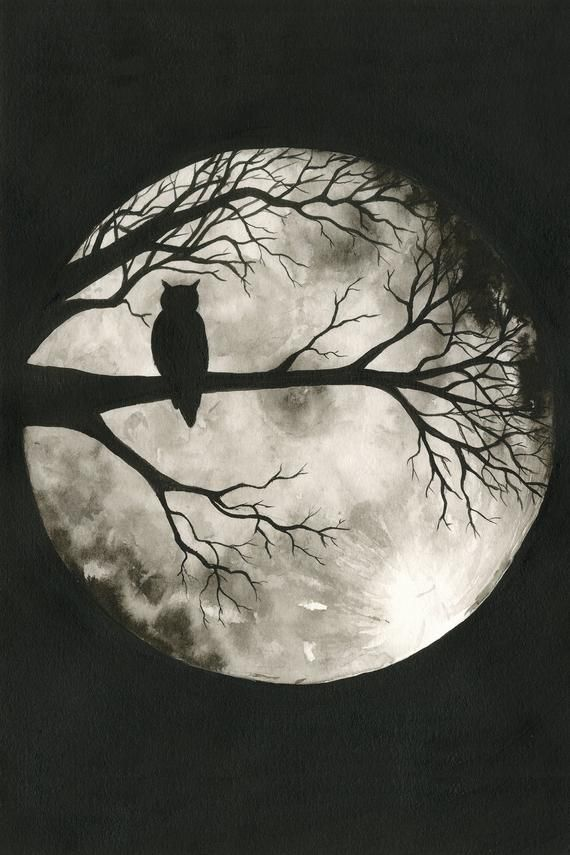

আমি কবি নই,বা নই কোনো লেখক। আমি তো শুধুই এক নীরব দর্শক,
যে তার ভাবনাগুলো হারিয়ে যাওয়ার ভয় পায়।
তোমাকে ছাড়াই এই শহর নিজ নিজ কাজে ব্যস্ত!
ঐক্য আর ভ্রাতৃত্বে এই শহর আজ অনুপ্রাণিত!
তবু এই শহর আজ পূর্ণ থেকেও থাকবে চির রিক্ত!
কেননা এই শহর কখনো—
রাখেনি তোমার কোনো অস্তিত্ব।
এই শহরের হাওয়ায় মিশে আছে—
এক অজানা গন্ধ!
অলিতে গলিতে লুকিয়ে আছে—
এক নতুনত্বের ছন্দ!
অচেনার মাঝেও এই শহর চেনা লাগে ধীরে—
এই শহরে নেই প্রাণহীনতা,
নিজেকে হারিয়েছি এই নব বৈচিত্র্যের ভিড়ে!
এই শহরের বাতাসটা বেশ হালকা,
বুকে লাগে না ভার ভার—
এই শহরের আকাশটা বড্ড পরিষ্কার,
নিজেকে মলিন লাগে না আর!
এই শহরে মানুষ খুবই প্রাঞ্জল!
মুখেতে সবার কারুকার্য মাখা!
তবু কেন যেন এই শহর আজ বিবর্ণ,
যেন এই শহর সাদা-কালো রঙে আঁকা।
এই শহরের বাতাস ছন্দহীন—
কারণ সে ছুঁয়ে দেখেনি তোমার
কোমল কেশরাশি!
এই শহরের আঁখিগুলো মলিন—
কারণ তারা দেখেনি তোমার মুখের
কোমল নিষ্পাপ হাসি।
এই শহরের ধুলাগুলো আজ বড়ই নিঃসঙ্গ!
কারণ তারা পায়নি তোমার বন্ধুত্ব।
এই শহরের শিশুগুলো বড়ই শান্ত!
কারণ তারা দেখেনি তোমার চাঞ্চল্য-প্রাণবন্ত
এই শহরের কৃষ্ণচূড়া ভারী ফ্যাকাশে!
কারণ সে পায় তোমার রঙের অনর্থক আঁকিবুঁকি।
এই শহরের গন্ধ অনেক ভ্যাপসা—
কেননা এই শহর পায়নি তোমার সুরভী!
তোমাকে ছাড়াই এই শহর নিজ নিজ কাজে ব্যস্ত!
ঐক্য আর ভ্রাতৃত্বে এই শহর আজ অনুপ্রাণিত!
তবু এই শহর আজ পূর্ণ থেকেও থাকবে চির রিক্ত !
কেননা এই শহর কখনো—
রাখেনি তোমার কোনো অস্তিত্ব।
হে ডিসেম্বর!!কেন তুমি এত নির্দয়??
ঢাকো সৌন্দর্য দূর্ভিক্ষের কুয়াশায়-
হে ডিসেম্বর!! তুমি বৈচিত্রময়-
তোমার বিদায়ে লিখিত হয়-
নতুন আরেক অধ্যায়।
ডিসেম্বর তুমি হাজির আবারো
নিয়ে কিছু হারানো চিঠির বার্তা,
তোমার প্রয়াসে মুছে যাবে যত
অসমাপ্ত গল্প কথা।
এবারও তুমি ব্যাতিব্যস্ত খুব
কেননা সময় যে বাকি খানিকটা।
খুব শিঘ্রই যেন শুরু হয় হয়
নবীন পথের পদযাত্রা।
দেখতে দেখতেই ফুরিয়ে গেল,
তোমার রঙ্গিলা গল্পের ঝুলি।
কালির আচড়ে আবারো কাগজে
ফুটবে রঙতুলি।
ডিসেম্বর তাই উদ্ধত আজ-
মুছে দিতে পুরাতন।
তুষার কবলে ঢেকে যাবে সব
রইবে কেবল চিরন্তন।
এই ডিসেম্বরেই কারও নব পদার্পণে,
পৃথিবী উঠেছে হেসে।
এই ডিসেম্বরেই কেউবা দিয়েছে পাড়ি,
তার চির ঠিকানার দেশে।
এই ডিসেম্বরেই কারও সন্ধানি চোখ
দেখেছে কাঙ্খিত গন্তব্য,
এই ডিসেম্বরেই কেউবা ভুলে গিয়েছে,
তাদের চির অটুট বন্ধুত্ব।
এই ডিসেম্বরেই কেউবা খুজে পেয়েছে,
তার দুই জীবনের সাথি,
এই ডিসেম্বরেই কেউবা তোমায় হারিয়ে
হয়েছে পথের বিবাগি।
হে ডিসেম্বর!!কেন তুমি এত নির্দয়??
ঢাকো সৌন্দর্য দূর্ভিক্ষের কুয়াশায়-
হে ডিসেম্বর!! তুমি বৈচিত্রময়-
তোমার বিদায়ে লিখিত হয়-
নতুন আরেক অধ্যায়।
একদিন আমিও হব-
তোমার গল্পের অংশবিশেষ মাত্র-
অস্তিত্ব আমার হবে বিলুপ্ত-
ভুলে যাবে এই ধাত্র।
তবু ডিসেম্বর! তুমি আসবে
আবারো ঘুরে ফিরে-
থাকব বেচে তোমার গল্পের
ছোট্ট অংশ জুড়ে।
সময়ের সাথে সবই বদলাই,
বদলাই না তোমার আবর্তন-
ভাটার টানে সবই ধুয়ে যাই
শুধু অক্ষত এই চিরন্তন।
বস্তুত তুমি সত্য!
আমি জানি- কোথাও না কোথাও
তুমি লুকিয়ে আছো অব্যক্ত!
এই মহা বিশ্বের কোনো বিন্দুতে-
ঠিকই রয়েছে তোমার বিচরণক্ষেত্র!
সত্য!
বলো কে তুমি হে সত্য?
আদৌ কো আছে তোমার অস্তিত্ব?
তোমায় করে কি অনুভব-
এই জগৎ বিশ্ব?
নাকি তুমি শুধুই আমার -
আধো আধো কল্পনা মাত্র!
হে সত্য!
বলো কোথায় তোমার দেখা পাবো?
যা ঘটছে সেখানেই কি তোমার বিচরণ?
নাকি যা বদলায়নি সেখানেই তুমি থেকেছো অমরন?
সত্য!
বলো তুমি কোন অন্ধকারের প্রভা?
তর্কে বিজয়ী বাগী কি পেয়েছে
তোমার সৌন্দর্যের শোভা?
না কি হেরে যাওয়া সে বক্তাই
তোমায় পেয়েও পায়নি তোমার দেখা?
বস্তুত তুমি সত্য!
আমি জানি- কোথাও না কোথাও
তুমি লুকিয়ে আছো অব্যক্ত!
এই মহা বিশ্বের কোনো বিন্দুতে-
ঠিকই রয়েছে তোমার বিচরণক্ষেত্র!
তবে তুমি সেই চিরন্তন সত্তা-
যার কাছে হয়তো যাওয়া যায়,
তবে পাওয়া যায় না তার ছোঁয়া!
জানি না কোথায় শেষ হবে
আমার সন্ধানী গন্তব্য-
কেননা এই জ্ঞান যে বড়ই সীমিত
হে সত্য!
তবু আশা রাখি একদিন তোমায় খুঁজে
বদলে দেব এই জগৎ মঞ্চ!
সে অবধি তুমি থেকো চির বিরাজমান
হে সত্য!
এইভাবে আমার সকল শূন্যতাকে
ঢেকে দিছো তুমি পূর্ণতার চাদরে।
অথচ যখন খুঁজি তোমায় নিকটে,
তুমি থাকো আমার দৌরাত্ম্যে।
যদি তুমি পথ হও,
আমি তার হারানো পথিক
চোখে তোমার মহাসমুদ্র,
আমি তারই ভ্রান্ত নাবিক।
হলে তুমি নীলাকাশ,
আমি কুঞ্জের বিহঙ্গ।
আমি যখন প্রকৃতি,
তুমি তারই সৌন্দর্য।
যখন তুমি মায়াবী কোকিল,
আমি তার বসন্ত।
যখন তুমি কণ্ঠের সুর,
আমি তখন নীস্তব্ধ ।
আমি কেবলই আধার রাত,
তুমি তার নীরবতা।
তুমি ঠিকই পূর্ণিমার চাঁদ,
অথচ আমি হারিয়ে যাওয়া জোছনা।
আমি এখনও শুষ্ক ফুল,
তুমি প্রাণ সঞ্চারী প্রজাপতি।
আমি এক অন্ধকার ঘর
তুমি তার জলন্ত মোমবাতি
আমি যখন ঝড়ো আবহাওয়া,
তুমি তার উদ্দামী হাওয়া।
তোমার দূরে থাকা মানে
আমার শূন্যে মিলিয়ে যাওয়া
এইভাবে আমার সকল শূন্যতাকে
ঢেকে দিছো তুমি পূর্ণতার চাদরে।
অথচ যখন খুঁজি তোমায় নিকটে,
তুমি থাকো আমার দৌরাত্ম্যে।
আমি আজ নিস্তব্ধ ঝড়,
আমার তান্ডব অদৃশ্য,
ভেঙে চুরমার সবার অজানাই
আমার প্রলয়-নীত্যে সব নিঃস্ব।
কষ্ট হচ্ছে শুরুতে,
তবু চলবো পথ নতুন করে—
পরিবর্তনকে মানিয়ে নেবো
পুরাতন আজ যাক চলে।
হতাশায় আমি কাঁদবো না আর
হাসতে চাই আমি আবার,
সব বাধা ধ্বংস করে—
আমি হবো চির দুর্বার।
যন্ত্রণা আমার হোক সহায়—
হতে চাই আবার শূন্য,
ধ্বংস থেকেই গড়ব নিজেকে
আজ আমার পুনর্জন্ম।
আজকের আমি নতুন আমি,
কেউ না চিনে আমাকে—
সব গ্লানি মেটামরফোসিস রুপান্তর
আমার জন্ম-মৃত্যু থেকে।
আমি আজ শান্ত দানব—
আমি নই কোনো অসাধারণ—
জানি চারদিকে রইবে স্বাভাবিক—
দেবে না আমায় কেউ আমন্ত্রণ।
আমি আজ নিস্তব্ধ ঝড়,
আমার তান্ডব অদৃশ্য,
ভেঙে চুরমার সবার অজানাই
আমার প্রলয়-নীত্যে সব নিঃস্ব।
এভাবেই আমি নতুন আমি
ধ্বংসই শুধু লক্ষ্য আমার,
ধ্বংস থেকেই হয় সৃষ্টি,
ভাঙতে চাই তাই বার বার।
আমিই ধ্বংস, আমিই সৃষ্টি,
আমি মাতাল আমি উন্মাদ,
আমার ধ্বংসের লীলা খেলায়
তৈরি হোক নতুন সমাজ।
আমার ধ্বংসে বিরক্ত মূর্খ
বিশ্ব চুকাতে পারবে না ঋণ,
এভাবেই আজ নতুন আমি,
আজ আমার পুনর্জন্ম দিন।
গুনাই ভরা জীবন আমার,
হয়েছি পথহারা,
মুক্তি আমি পাচ্ছি না,
কিভাবে পাবো ছাড়া?
গুনাই ভরা জীবন আমার,
পাচ্ছি না যে ছাড়া;
ছেড়ে দিয়েও করছি আবার,
হয়েছি দিশেহারা।
ভাবছি এই শেষটি,
হবে না কোনোদিন আর,
সব জেনেও অজানা আমি,
তাই জড়াই বারবার।
সব বুঝেও অবুঝ আমার মন,
পাচ্ছি না আর সামলাতে,
কি করে যে গুনার খাতা থেকে
কাটব আমার নামটাকে!
মন যে আমার ভারী অস্থির,
শোনে না আমার কথা;
তাহলে কি গুনামুক্তির
সব চেষ্টাই বৃথা?
না না, তা হবে কেন?
থামাবো না আমি চেষ্টা,
প্রভুর কাছে হাত পাতলে
ভালোই হবে শেষটা।
প্রভু, মাফ চাই, মাফ চাই,
কেঁদে ভাসাই মোনাজাতে;
একই কাজ করছি বারবার—
মাফ করবেন তো আমাকে?
গুনাই ভরা জীবন আমার,
হয়েছি পথহারা,
মুক্তি আমি পাচ্ছি না,
কিভাবে পাবো ছাড়া?
মুখের জবান দলিল আমার,
কাজই অস্তিত্বের প্রমাণ।
যদি লিখে ফেলি প্রলয় নামা
মেতে উঠি অবিরাম।
আমি বাকহীন, এক নীরব শ্রোতা,
হাসি মুখে সব সয়ে যাই।
তোমার বলা কটু কথাগুলো
আমার হৃদয়ে ছুঁয়ে যাই
তবে মনে রেখো তুমি
সেই ভিতু মনেই লুকিয়ে আছে
এক অজেয় ধ্বংসের দেবতা,
তোমার সামনে নত মাথা
তাঁর কেবলই এক মিথ্যা সহনশীলতা।
মুখের জবান দলিল আমার,
কাজই অস্তিত্বের প্রমাণ।
যদি লিখে ফেলি প্রলয় নামা
মেতে উঠি অবিরাম।
join my fb page নিশাচর and support me